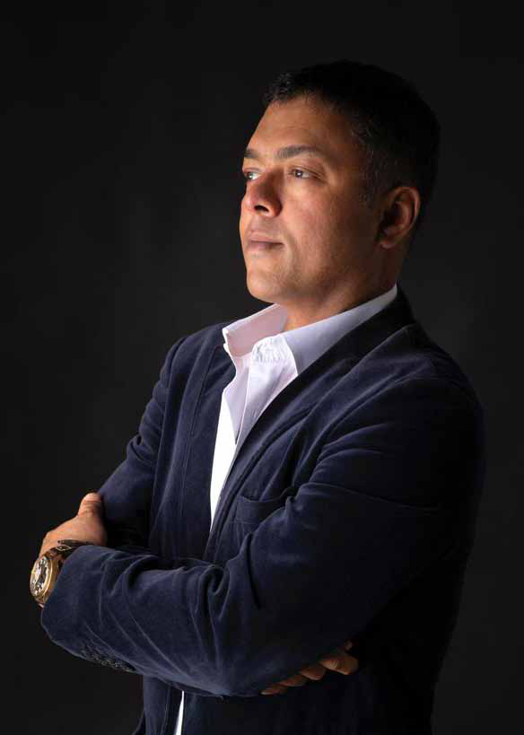
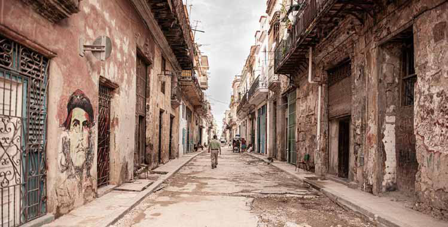
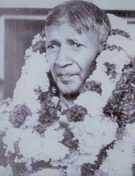
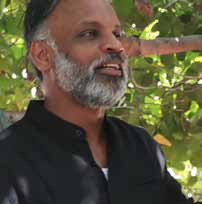
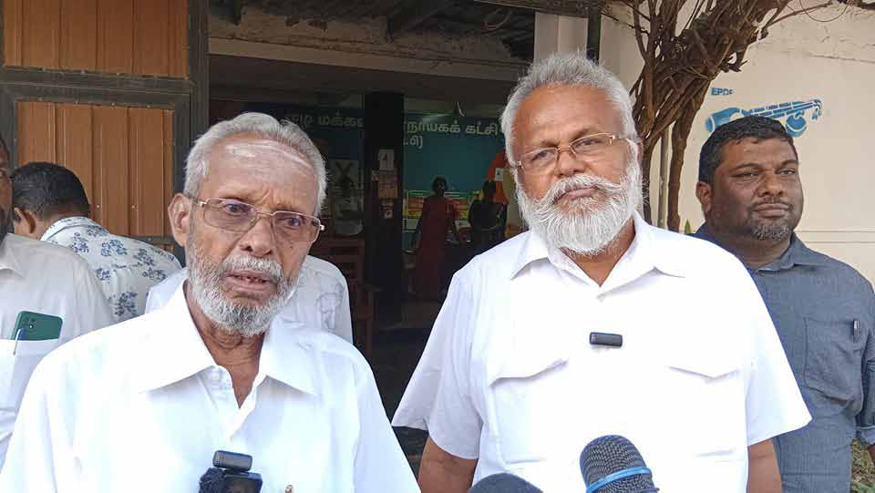

special interview
special interview
Jaffna Monitor hellojaffnamonitor@gmail.com 62 special interview “We’ve Funded Temples. We’ve Funded Bullets. Maybe It’s Time We Fund Trauma Centres and Teacher Salaries”: BY: Our Special Correspondent Abbi Kanthasamy Speaks to Jaffna Monitor W hen entrepreneur and strategist Abbi Kanthasamy published his deeply personal essay, “A Beacon Amidst the Bleeding: What Jaffna’s Doctors Taught Me About Life,” he may not have anticipated the resonance it would spark. Yet within hours, the piece went viral across social media — striking a nerve in a nation numbed by crisis.
Born in Jaffna to a Director of Education father and a university lecturer mother, Abbi spent much of his early life in the North. Today, he is a dynamic figure in global business circles: an entrepreneur, restaurateur, writer, and photographer, with ventures spanning from Malaysia to North America.

Jaffna Monitor hellojaffnamonitor@gmail.com 63 Though widely known as “Abbi,” his given name is Abethan — a name bestowed by the legendary Tamil scholar and journalist K. Kailasapathy. Abethan, meaning "one who does not discriminate," would prove quietly prophetic for someone who would later bridge cultures through cuisine, commerce, and creativity.
He is internationally recognized as the founder of Nadodi and Aliyaa, the first Sri Lankan cuisine-inspired restaurants to receive Michelin recognition. His flagship venture, Nadodi, operates within the prestigious Four Seasons Hotel in Kuala Lumpur, delivering an award-winning fine-dining experience that seamlessly fuses Jaffna, South Indian, Sri Lankan, and Western culinary traditions. The restaurant's signature tasting menu offers a sophisticated reinterpretation of ancestral flavors for the contemporary palate.
His diverse business ventures extend beyond culinary excellence to include The Sticky Wicket sports bar — a vibrant social hub where entertainment and hospitality converge.
He has also established a flourishing North American furniture distribution enterprise, specializing in premium upholstered products under an internationally acclaimed brand. This sophisticated operation spans the continent with its Toronto headquarters anchoring showrooms in the entertainment capital of Las Vegas and the commercial nexus of North Carolina.
Yet his artistic vision transcends the corporate milieu. His evocative photography—replete with texture and emotional gravitas— transforms his restaurant spaces into immersive galleries.
In this compelling discourse with Jaffna Monitor, Abbi elucidates the deeply personal motivations behind his literary endeavors, shares his perspicacious observations about the unexpected efficacy within public health systems, and delivers a provocative exhortation to the Tamil diaspora, advocating for a paradigmatic transformation in how the community approaches its philanthropic allocations. What inspired you to pen “A Beacon Amidst the Bleeding,” and how has the public’s reaction influenced your perspective on Sri Lanka’s healthcare system? It wasn’t planned. I was raw—emotionally and personally—watching my mother survive a near-fatal heart attack in the north. What moved me most wasn’t just the medical care; it was the quiet defiance of those who gave it. The doctors and nurses in Mullaitivu and Jaffna worked without drama, without complaint—just calm, unwavering professionalism. Writing was the only way I knew how to thank them. The public’s response has only reinforced my reverence for those who stay and serve, even when the world tells them to leave. You vividly describe the dedication and selflessness of the Jaffna and Mullaitivu healthcare professionals. What specific actions or interactions truly left the deepest impression on you? A young doctor—barely 30—coordinated my mother’s transfer between districts like a general in a warzone: no ego, no theatrics, just unwavering focus. The nurses and orderlies moved with a rhythm of quiet competence.
Jaffna Monitor hellojaffnamonitor@gmail.com 64 None of it was a one-off. It was systemic excellence amid scarcity. The article has gone viral in Sri Lanka. What has been your reaction to this overwhelming response, particularly from within Sri Lanka? Were you surprised by its impact? Floored. I wrote it in a single sitting, unedited, unsanitized. Actually while on a drive from Mullativu to Jaffna. I didn’t expect it to land the way it did. But maybe that’s what people needed—truth without spin. The response reminded me that even in a fractured world, there’s still a hunger for dignity, not just outrage. Someone even unearthed an essay I wrote when I was 13 at Jaffna Hindu College— about the Titanic, written when they found the wreck. I’ve been fascinated with storytelling ever since. Back then, I couldn’t afford a camera. The ads for Nikon F-series cameras in the back of National Geographic haunted me. Today, I have all the gear I dreamed of. But the heart of photography— and writing—is the same: it’s about choosing what to include, what to blur, what to sharpen. Storytelling is curation. And I hope the next generation picks up their phones and starts framing their own truths. You draw a powerful contrast between the healthcare systems of Canada and northern Sri Lanka. What do you see as the core strengths of Sri Lanka’s public healthcare- particularly in emergency care- that are often overlooked? Efficiency born of necessity. In the north, there’s no time for bureaucratic red tape. Decisions are made fast, lives are prioritized over paperwork. Global perceptions often assume that brilliance needs budget. But what I witnessed was something else entirely: care powered by purpose, not privilege. You mention the exodus of doctors from Sri Lanka. What measures do you believe could encourage medical professionals to remain and serve in the country? Respect. Recognition. Real working conditions. It’s not just about salaries—though those matter—it’s about being seen and supported. Housing, scholarships, and professional development all play a role, but ultimately, the government must lead with vision. And let’s not limit the conversation to doctors. Teachers, lecturers, counsellors— they’re all bleeding out of the system. We either invest in them now or pay the price for generations to come.
Jaffna Monitor hellojaffnamonitor@gmail.com 65 Your father, Mr. Kanthasamy, who served as a Director of Education in Jaffna, and your mother, Mrs. Parvathy Kanthasamy—a former lecturer at the University of Jaffna and now a social worker and activist in Canada—have both been influential figures in education and social activism. How have their values and life experiences shaped your own path and worldview? They taught me that success without service is hollow—and that the most meaningful lives are built quietly, with conviction. My father, Mr. Kanthasamy, served as Director of Education for Sri Lanka’s North and East during some of the region’s most fragile years. He wasn’t just running schools—he was preserving the future for communities under siege, making sure that even in the darkest moments, children had a reason to hope. His leadership was quiet, firm, and deeply rooted in principle. My mother, Dr. Parvathy, was a linguistics lecturer at the University of Jaffna. She later won a senior Fulbright scholarship, did postdoctoral research, and taught at Stanford University. While she was at Stanford, I completed high school in Palo Alto, then went on to earn my engineering degree at McGill University in Canada. But no academic institution ever taught me what I learned the day we lost our home. I still remember standing in Kantharmadam, watching our only house burn—set ablaze by the military, right before our eyes. I was just a nine year old boy. And in the middle of that inferno, my mother turned to me and said: “They can burn our house, but they can’t burn your mom’s PhD.” Perhaps the best lesson I’ve ever had. That moment, more than any classroom, taught me what resilience truly looks like. My parents gave without applause. They endured without bitterness. They showed me that dignity isn’t inherited—it’s practiced. That service, not success, is the highest calling. And that even when everything is taken from you, no one can touch what you’ve built inside. How do you navigate and integrate your Sri Lankan heritage within your global business ventures? I don’t compartmentalize it—I weave it in. Whether I’m designing a piece of furniture or building a restaurant brand, there’s always a thread back to Jaffna. Culture isn’t a museum piece. It’s a remix—heritage in motion. Given that Nadodi offers a unique fusion of Sri Lankan and Indian culinary traditions, what inspired this blend, and how do you ensure the soul of both cuisines is preserved? It wasn’t about novelty. It was about movement— people crossing borders, bringing recipes, losing homes but keeping spices. Our chefs don’t just cook. They investigate. They sit with elders, document oral histories, and travel into the Vanni. That’s how we ensure
Jaffna Monitor hellojaffnamonitor@gmail.com 66 Though Che's image fades on the crumbling walls, the revolution still breathes - seen through Abbi Kanthasamy’s lens in the timeless alleys of Old Havana. Black and white bulls, shoulder to shoulder, hauling hay across Karanagar Bridge - Jaffna’s quiet poetry in motion, captured through Abbi Kanthasamy’s lens.

Jaffna Monitor hellojaffnamonitor@gmail.com 67 authenticity lives inside the innovation. Today, Nadodi operates out of the Four Seasons in KL. Seeing our name on that elevator button— it was personal. It meant our story mattered. How do you envision the evolution of Sri Lankan cuisine and culture on the global stage, and what role do you hope to play in that journey? We’re just getting started. There’s such regional complexity, so much soul. If I can be the guy holding the flashlight while others take the stage—great. Let the world see what we’ve known all along: our food, our rhythm, our people—they’re world-class. Holding 42 U.S. design patents is a remarkable achievement. Can you share insights into your creative process and what fuels your innovation? I look for friction—what annoys people, what doesn’t work. Then I sketch, test, destroy, rebuild. I treat design like storytelling: rooted in empathy. Most of my patents are design patents—meant to protect form and deter copycats. But here’s the truth: patents aren’t cheap. They only matter if you can defend them. So you’d better love what you’re protecting. I do. Your photography spans everything from street cricket in Sri Lanka to culinary artistry. What stories are you most passionate about telling, and how does photography fit into your broader creative life? Edges. That’s where my lens goes—where tradition meets change, where beauty rots and reinvents itself. Photography slows me down. It teaches me to see. It’s the same instinct I apply in business and writing. All three are about framing something invisible. My site- www.abbiphotography.com—shows that I’ve always valued narrative over technical perfection. But I learned the old-school way: film, darkrooms, fixer chemicals. I still have a darkroom. I shoot black and white. And I’m trying to get my son Cheran hooked on it. To me, monochrome is still the purest form. What role do you believe the Sri Lankan diaspora can play in the country’s development, particularly in sectors like healthcare and education? We’ve funded temples. We’ve funded bullets. Maybe now it’s time we fund trauma centres and teacher salaries. The diaspora has the intellect, the networks, the capital. What we lack is coordination—and sometimes, compassion in the right direction. An NGO once told me that in Jaffna, you can raise RM200,000 for a temple festival, but struggle to get RM10,000 for disabled children. That has to change. It’s not a money problem. It’s a priority problem. What advice would you offer to aspiring entrepreneurs and creatives who want to make a meaningful impact in their communities? Start ugly. Start now. Don’t wait for perfect. Solve one small problem with big heart. And if you mess up—mess up with volume. That’s where the stories live. I’m still learning. That’s the point.
Jaffna Monitor hellojaffnamonitor@gmail.com 68 I n Eelam Tamil politics, few words have caused as much damage—or claimed as many lives—as the word “traitor.” And it was S.J.V. Chelvanayakam, founder of the Ilankai Thamil Arasu Katchi (Federal Party) in 1949, who first slipped this venom into the bloodstream of Tamil political discourse. Until then, the Tamil Congress and its leader G.G. Ponnambalam had struggled to make inroads in the East. They remained a northern force—Jaffna-centric, both in character and reach. In the East, the man of the moment was V. Nalliah Master—a respected leader who served as Deputy Minister for education, health, and postal services. But to plant the Federal Party’s flag in the East, Chelvanayakam launched a smear campaign, branding Nalliah as a “kaikkooli” (a political stooge)—someone blindly loyal to the Sinhalese-led government. Stage by stage, rally by rally, the insult echoed across the East. And only after bringing Nalliah master down did the Federal Party finally step into the region. Years later, Chelvanayakam’s political heir A. Amirthalingam would refine the rhetoric. “Kaikkooli” wasn’t sharp enough. He needed a word with blood on its edge. And so, “traitor” entered the lexicon—with Alfred Duraiappah, CVK Sivagnanam Closes the Circle That S.J.V. Chelvanayakam Opened Opinion BY: M.R.Stalin Gnanam V. Nalliah Master S.J.V. Chelvanayakam


Jaffna Monitor hellojaffnamonitor@gmail.com 69 Amirthalingam’s rival in Jaffna, as its first public victim. That word became a bullet— fired by a young Velupillai Prabhakaran, barely in his twenties. What began as a slur soon evolved into an ideology. Prabhakaran used the label “traitor” not merely to justify assassinations, but to silence dissent, dismantle rival militant movements, and consolidate Tamil nationalist power under the LTTE. In a grim twist of fate, he would eventually turn the gun on Amirthalingam himself—the very man who first taught him to see Duraiappah as a traitor. Thus was born a politics of moral absolutism— where to disagree was to betray, and to betray was to die. No one has worn the label “traitor” more often than Douglas Devananda. For decades, Tamil nationalist media hurled the word at him with unrelenting force. Yet, for all the LTTE’s reach and firepower, they never managed to silence “traitor Douglas.” Nor could they ever claim the satisfaction of having done so. And now, history turns a curious corner. The party that first unleashed this rhetoric— the Federal Party—must now be the one to bury it. And the man leading that quiet burial is none other than C.V.K. Sivagnanam, Acting Leader of the party and once a trusted figure in the eyes of Prabhakaran himself. By walking into Douglas Devananda’s office in Jaffna-by asking for his support to form local government bodies-Sivagnanam did more than strike a political deal. He challenged a legacy. He stepped into the shadow of Chelvanayakam and began the long, painful work of undoing the curse his party had cast. What Chelvanayakam began, Sivagnanam is now trying to end. In doing so, in his own quiet way, he is seeking to wash away the sins of his party, the legacy of his political ancestors, and the bloodstains they left behind. Destiny, it seems, has its own strange rhythm. Editor’s Note: We welcome alternative viewpoints. If you’d like to respond to this article, email us at hellojaffnamonitor@gmail.com. We will consider all submissions-except those that glorify violence, deaths, or assassinations. ITAK Acting President C.V.K. Sivagnanam with EPDP Leader Douglas Devananda, after their meeting at EPDP’s office in Jaffna.
